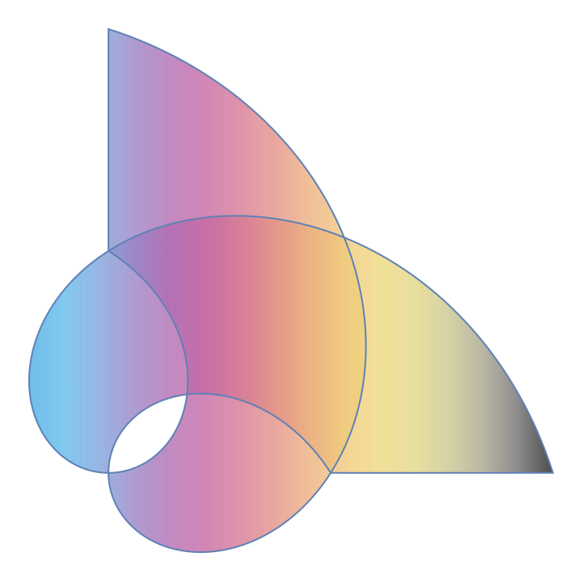

简介
墨迹磨叽两个月，总算弄出了个残次品出来。不管怎样。是骡子是马，都得拉出来溜溜了。
如你所见，这是一个基于 Hexo 与 GitHub Pages 的静态博客。相关的教程一抓一大把，当然质量残次不齐。不过这一篇博文不是一篇教程，而是一篇记录自己的行动的草稿。我的记性比较差，因此可能会漏掉一点，到时候也许想起什么还会修修补补吧 。
前传
如果我没记错的话，在这次之前我还尝试过两次建博，都是基于 Hexo，但都毫不意外地失败了。因为我不仅没基础，野心又大。三年了好歹是有点长进的，勉强拼凑出一个框架，并安慰自己「能用就行了」。
具体也记不清了，先烂尾一下。
Hugo
然后在网上看到另一个博客框架 Hugo 的介绍，于是在高考后一周尝试用 Hugo 建造一个博客。而现在它在隐藏文件夹 Deprecated Blog 里安眠。
Hugo 有什么好处呢？经常能看到的回答就是「快 」，我亲身体验也是如此。而且更新比较活跃，GitHub 上两个项目都有 10 年以上的历史，而 Hugo 的 commits 次数是 Hexo 两倍有余。
Hexo 又有什么缺点呢？我一个简陋的 Blog 用的 node_modules 已经要 100M 了。（不过 Hugo 博客总大小也没小多少，何况还没完全配置完）。同时两个仓库 star 数目也是天差地别。
主要谈一下 Hugo 的缺点。
首先有一个缺点，Hexo 有中文文档，在中文社区也有很多资料（当然时效性及质量也是参差不齐），而 Hugo 只有英文文档，中文社区资料也相对较少。
其次也是最重要的，Hugo 也有很多主题，但我都看不上眼。之前建博时也选择了 NexT 主题，无他，是真的漂亮，直接戳进我的心底，而且是 Hexo 最火的主题，社区支持比较到位，功能也很齐全。
然后我在精挑细选下选择了 DoIt 主题，这个主题也挺不错的，支持的功能也不少，但我最深恶痛绝的就是它的 Shortcodes 语法。
其实有 snippets 加持下语法稍微复杂一点也没什么，而且它功能 是真的多啊：什么 mapbox, music, typeit 等，让人眼花缭乱。但是我非常不能接受的就是数学公式的支持，寻常写法 $ ... $ 可以，不过要 \ 双写转义。不转义也可以，用 Shortcodes。其他语法用 Shortcodes 我可以忍受，但数学公式用 Shortcodes 我无法容忍。下面是用 Shortcodes 的示例，仅对数学公式有洁癖，弃用。
1 2 3 4 5 {{< math >}}$\|\boldsymbol{x}\|_{0}=\sqrt[0]{\sum_{i} x_{i}^{0}}${{< /math >}} {{< math >}} $$\|\boldsymbol{x}\|_{0}=\sqrt[0]{\sum_{i} x_{i}^{0}}$$ {{< /math >}}
于是我毅然决然放弃了 Hugo，重新转向了 Hexo。当然这不意味着就跟 Hugo 拜拜了，以后还是有可能投入 Hugo 的怀抱的。
其实还有一个原因，我会一点 JavaScript（指会 console.log），而完全不会 Golang。
Hexo
基本
没什么好说的，而且具体我记不清了，就把值得放上来的放上来并解释一下。
_config.yml permalink: :year/:month/:title/
永久链接去掉了日，感觉保留日的话太稀疏了。
_config.yml new_post_name: :year-:month-:day :title.md
这样就能按时间排序文章，不会乱了。
图像
这里的图像包括三个部分，都是由 Mathematica 提供创意（指在文档里随便找个样子），我进行简单修改得到的。
网站图标
博客图像
作者图像
ParametricPlot [ Evaluate @ RotationTransform [ \[Theta] ] [ { 3 Cos [ u ] , Sin [ u ] } ] , { u , 0 , 2 Pi } , { \[Theta] , 0 , Pi / 2 } , Mesh -> Automatic , Axes -> False , Frame -> False , PlotTheme -> "Monochrome" ]

ParametricPlot [ { ( v + u ) Cos [ u ] , ( v + u ) Sin [ u ] } , { u ,- Pi , Pi / 2 } , { v , 0 , Pi / 2 } , ColorFunction -> "CMYKColors" , PlotStyle -> Directive [ Red , Opacity [ 0.8 ] ] , Axes -> False , Frame -> False , PerformanceGoal -> "Quality" , PlotPoints -> 120 ]
ParametricPlot [ Evaluate [ Table [ { ( v + u ) Cos [ u + i Pi / 2 ] , ( v + u ) Sin [ u + i Pi / 2 ] } , { i ,- Pi / 2 , Pi / 2 } ] ] , { u , 0 , 2 Pi } , { v , 0 , 1 } , Mesh -> None , Axes -> False , Frame -> False ]
博客图像有点丑，找个机会换掉。其他两个我还是很满意的。
markdown
_config.yml 1 2 3 4 5 6 7 8 9 10 11 12 13 14 15 16 17 18 19 20 21 22 23 24 25 26 27 28 29 30 31 32 33 34 35 36 37 38 39 40 41 42 43 44 45 46 markdown: preset: 'default' render: html: true xhtmlOut: false langPrefix: 'language-' breaks: true linkify: true typographer: true quotes: '""\'\'' enable_rules: disable_rules: plugins: - name: '@renbaoshuo/markdown-it-katex' options: skipDelimitersCheck: true - name: 'markdown-it-abbr' - name: 'markdown-it-emoji' - name: 'markdown-it-footnote' - name: 'markdown-it-ins' - name: 'markdown-it-mark' - name: 'markdown-it-merge-cells' - name: 'markdown-it-multimd-table' options: multiline: false rowspan: true headerless: true multibody: true aotolabel: true - name: 'markdown-it-sub' - name: 'markdown-it-sup' - name: 'markdown-it-task-list-plus' anchors: level: 2 collisionSuffix: '' permalink: false permalinkClass: 'header-anchor' permalinkSide: 'right' permalinkSymbol: '' case: 0 separator: '-' images: lazyload: false prepend_root: false post_asset: false inline: false
我用的 markdown 插件是 hexo-renderer-markdown-it 。
我用的是直角引号，就改了 quotes，但其实原文我用的就是直角引号，所以其实没必要 改成英文逗号了，因为这个设置会把英文里的引号瞎改。其他就基本保留默认配置没动了。
除了几个常用的自带插件，还额外加了 KaTeX \KaTeX K A T E X markdown-it-multimd-table ，markdown-it-task-list-plus 等插件。另外 markdown-it-multimd-table 需要配置一下设置，一开始没注意以为没装上。
1 2 3 npm i markdown-it katex @renbaoshuo/markdown-it-katex --save npm i markdown-it-multimd-table --save npm i markdown-it-task-list-plus --save
anchors 不知道啥设置，只是把 permalinkSide 改成了 right，标题后就有个锚点，似乎有重复，就删掉了 permalinkSymbol，其他看注释也不知道啥意思就不乱动了。
代码框
_config.next.yml 1 2 3 4 5 6 7 8 9 10 11 12 13 14 15 codeblock: theme: light: gruvbox-light dark: gruvbox-dark copy_button: enable: true style: mac fold: enable: true threshold: 500
代码框使用了 gruvbox 主题，跟我 Vim 主题一样。同时样式用了 Mac，不得不说挺漂亮的。另外文档这里错了，还是我自己去找文件才发现 gruvbox 只有这两个而不是文档里分那么多的。不过也好，选择困难就不用纠结这么多了。
Note
_config.next.yml 1 2 3 4 5 6 7 8 9 10 11 12 note: style: modern icons: true light_bg_offset: 0
配置里的 light_bg_offset 不知道啥意思，搜了一下没发现什么，试了几个值也没发现区别，就此作罢。
以下是 Admonitions 相关内容，已经过期。最新请见 hexo-admonition-lyieu 及博文展示
呜呜呜我的 Admonitions 没了，取而代之的是这个 Note 。勉强设置了一下，跟 Admonitions 差远了，无论是语法还是样式，只能将就着用了。 加了插件，能用 Admonitions 了 。
展示样式源码（已关闭 Note 功能因此无法正常显示）
展示一下样式
1 2 3 4 5 6 7 8 9 10 11 12 13 14 15 16 17 18 19 20 21 22 23 24 25 26 27 28 29 30 31 32 33 34 35 {% note default %} ##### Default Content {% endnote %} {% note primary %} ##### Primary Content {% endnote %} {% note success %} ##### Success Content {% endnote %} {% note info %} ##### Info Content {% endnote %} {% note warning %} ##### Warning Content {% endnote %} {% note danger %} ##### Danger Content {% endnote %} {% note default Summary %} ##### Default(with Summary) 最后这个就是个加了 Summary 的 Default，蛮不协调的。 {% endnote %}
我也试图找过 Admonitions 的插件，不过要么对夜间模式支持不够（没试过，看 issues 说的），要么语法不够友好（还是这个理由）。另外找的过程还发现一些震惊的东西，但就不多说了
2023 年 8 月 9 日更新：使用 hexo-admonition-better 插件
安装了 hexo-admonition-better 插件并进行了部分修改。
这下总算能用 Admonitions 了，当然还是有缺陷的，比如支持样式少，不支持折叠，没有图标，无法使用 markdown-it 插件语法等。虽然改进我不会，但依葫芦画瓢我还是会的，因此增加了两种样式 example 和 quote。除了修改 index.js 里的正则外，还要在 lib/default.css 里加入下面的代码
1 2 3 4 5 6 7 8 9 10 11 12 13 14 15 16 17 18 19 20 21 22 23 24 25 .example >.admonition-title { background-color : rgba (124 , 77 , 255 , .1 ); } .quote >.admonition-title { background-color : rgba (170 , 170 , 170 , .1 ); } .admonition .example { border-color : #7C4DFF ; } .admonition .quote { border-color : #AAAAAA ; } .example >.admonition-title ::before { background-color : #7C4DFF ; border-radius : 50% ; } .quote >.admonition-title ::before { background-color : #AAAAAA ; border-radius : 50% ; }
除此以外，由于字体对比度不够，我还修改了一点，如下，给字体规定了颜色 #33495E。当然还是有缺陷的，比如链接颜色就变了，对比度也没了，但我也懒得再改了。（删除线用的是 <del> ... </del>，~~...~~ 语法在这个 Admonitions 里用不了）
原代码
1 2 3 4 5 6 7 8 9 10 11 12 .admonition { color : #33495E ; margin : 1.5625em 0 ; padding : .6rem ; overflow : hidden; font-size : .64rem ; page-break-inside : avoid; border-left : .3rem solid #42b983 ; border-radius : .3rem ; box-shadow : 0 0.1rem 0.4rem rgba (0 ,0 ,0 ,.05 ), 0 0 0.05rem rgba (0 ,0 ,0 ,.1 ); background-color : #fafafa ; }
2023 年 8 月 9 日更新，采用更改背景颜色的方法。同时将 Alpha 值统一改为 .2。
2023 年 8 月 19 日更新：由于字体太小，设置了字体大小为 20px（但看起来还是比正文小，不过观感好多了。测试发现会被覆盖，于是加了 !important）。然后行距太大了，我就设置行距为 initial（都是瞎设的也不知道会不会有问题），为保证标题宽度不变，找到发现 line-height 为 2 就设置在了 admonition-title 里。
1 2 3 4 5 6 7 8 9 10 11 12 13 14 15 16 17 18 19 20 21 22 .admonition { font-size : 20px !important ; margin : 1.5625em 0 ; padding : .6rem ; overflow : hidden; font-size : .64rem ; page-break-inside : avoid; border-left : .3rem solid #42b983 ; border-radius : .3rem ; box-shadow : 0 0.1rem 0.4rem rgba (0 ,0 ,0 ,.05 ), 0 0 0.05rem rgba (0 ,0 ,0 ,.1 ); background-color : #424242 ; line-height : initial; } p .admonition-title { position : relative; margin : -.6rem -.6rem .8em -.6rem !important ; padding : .4rem .6rem .4rem 2.5rem ; font-weight : 700 ; background-color :rgba (66 , 185 , 131 , .1 ); line-height : 2 ; }
2023 年 8 月 25 日更新，加入了白天模式的支持。不放代码了，见 Blog Repo ，只是改了个背景色和标题的透明度。
26 日更新。Blog 设为 private 了，怕传上隐私信息。代码放下面。
hexo-admonition-better/lib/default.css 1 2 3 4 5 6 7 8 9 10 11 12 13 14 15 16 17 18 19 20 21 22 23 24 25 26 27 28 29 30 31 32 33 34 35 36 37 38 39 40 41 42 43 44 45 46 47 48 49 50 51 52 53 54 55 56 57 58 59 60 61 62 63 64 65 66 67 68 69 70 71 72 73 74 75 76 77 78 79 80 81 82 83 84 85 86 87 88 89 90 91 92 93 94 95 96 97 98 99 100 101 102 103 104 105 106 107 108 109 110 111 112 113 114 115 116 117 118 119 120 121 122 123 124 125 126 127 128 129 130 131 132 133 134 135 136 137 138 139 140 .admonition { font-size : 20px !important ; margin : 1.5625em 0 ; padding : .6rem ; overflow : hidden; font-size : .64rem ; page-break-inside : avoid; border-left : .3rem solid #42b983 ; border-radius : .3rem ; box-shadow : 0 0.1rem 0.4rem rgba (0 ,0 ,0 ,.05 ), 0 0 0.05rem rgba (0 ,0 ,0 ,.1 ); line-height : initial; } p .admonition-title { position : relative; margin : -.6rem -.6rem .8em -.6rem !important ; padding : .4rem .6rem .4rem 2.5rem ; font-weight : 700 ; line-height : 2 ; } .admonition-title ::before { position : absolute; top : .9rem ; left : 1rem ; width : 12px ; height : 12px ; background-color : #42b983 ; border-radius : 50% ; content : ' ' ; } .admonition .example { border-color : #7C4DFF ; } .admonition .quote { border-color : #AAAAAA ; } .admonition .info , .admonition .todo { border-color : #00b8d4 ; } .admonition .warning , .admonition .attention , .admonition .caution { border-color : #ff9100 ; } .admonition .failure , .admonition .missing , .admonition .fail , .admonition .error { border-color : #ff5252 ; } .example >.admonition-title ::before { background-color : #7C4DFF ; border-radius : 50% ; } .quote >.admonition-title ::before { background-color : #AAAAAA ; border-radius : 50% ; } .info >.admonition-title ::before , .todo >.admonition-title ::before { background-color : #00b8d4 ; border-radius : 50% ; } .warning >.admonition-title ::before , .attention >.admonition-title ::before , .caution >.admonition-title ::before { background-color : #ff9100 ; border-radius : 50% ; } .failure >.admonition-title ::before ,.missing >.admonition-title ::before ,.fail >.admonition-title ::before ,.error >.admonition-title ::before { background-color : #ff5252 ;; border-radius : 50% ; } .admonition >:last-child { margin-bottom : 0 !important ; } @media (prefers-color-scheme : light) { .admonition { background-color : #eeeeee ; } p .admonition-title { background-color :rgba (66 , 185 , 131 , .4 ); } .example >.admonition-title { background-color : rgba (124 , 77 , 255 , .4 ); } .quote >.admonition-title { background-color : rgba (170 , 170 , 170 , .4 ); } .info >.admonition-title , .todo >.admonition-title { background-color : rgba (0 ,184 ,212 ,.4 ); } .warning >.admonition-title , .attention >.admonition-title , .caution >.admonition-title { background-color : rgba (255 ,145 ,0 ,.4 ); } .failure >.admonition-title , .missing >.admonition-title , .fail >.admonition-title , .error >.admonition-title { background-color : rgba (255 ,82 ,82 ,.4 ); } } @media (prefers-color-scheme : dark) { .admonition { background-color : #424242 ; } p .admonition-title { background-color :rgba (66 , 185 , 131 , .2 ); } .example >.admonition-title { background-color : rgba (124 , 77 , 255 , .2 ); } .quote >.admonition-title { background-color : rgba (170 , 170 , 170 , .2 ); } .info >.admonition-title , .todo >.admonition-title { background-color : rgba (0 ,184 ,212 ,.2 ); } .warning >.admonition-title , .attention >.admonition-title , .caution >.admonition-title { background-color : rgba (255 ,145 ,0 ,.2 ); } .failure >.admonition-title , .missing >.admonition-title , .fail >.admonition-title , .error >.admonition-title { background-color : rgba (255 ,82 ,82 ,.2 ); } }
下面是展示，无法嵌套单独放出来了。
warning, attention, caution
内容
error, failure, missing, fail
内容
Tabs
_config.next.yml 1 2 3 4 5 6 7 tabs: sticky: false transition: tabs: true labels: true
Tabs 更是差远了，丑死了，随便配了一下，我绝对不会用的。这是 MkDocs 的 Tabs
下面是官网的例子
1 2 3 4 5 6 7 8 9 10 11 12 13 {% tabs Fifth unique name %} <!-- tab @text-width --> **This is Tab 1.** <!-- endtab --> <!-- tab @font --> **This is Tab 2.** <!-- endtab --> <!-- tab @bold --> **This is Tab 3.** <!-- endtab --> {% endtabs %}
看完 NexT 的特殊语法，发现 Shortcodes 也不是那么无法接受了，甚至更不错
评论
_config.next.yml 1 2 3 4 5 6 7 8 9 10 waline: enable: true serverURL: https://blog-comments-virid.vercel.app/
评论使用了 Waline ，我认为这是最强评论插件，支持 TeX \TeX T E X
评论可以登录，支持 QQ，微博，GitHub，Twitter(X)，Facebook 登录。也可以匿名，只不过昵称和邮箱必填（当然乱填也是可以的，只是我确实不希望有人乱填），网址选填。
左下角四个按钮的用处
GFM 教程：简易的 markdown 教程
表情：包括 QQ 和 Twemoji（感觉都不好看，矮子里拔高个。QQ 是因为习惯）
图片：支持上传图片（限制未知）
预览：预览 markdown，不支持 TeX \TeX T E X
还有「反应」，找了九个 Twemoji，访客可以表示对这篇文章的态度如何。博主似乎是不知道谁点的。
中规中矩按教程用 Vercel 和 LeanCloud 弄了一个。Vercel 我的 GitHub 登陆不了，显示被 Block，查了一下说是要 Gmail，连 Outlook 都不行，发邮件也不回我，因此用了个 Gmail 的小号解决了，并给大号 Collaborator。
到现在还有几个问题：
KaTeX \KaTeX K A T E X 邮件提醒失败，配置了邮件提醒，但一直没成功
可能要科学上网才能看到评论，不过能看到 GitHub Pages 想来解决 Vercel 的问题也很轻松吧
微信提醒显示的是 HTML，不知道能不能显示渲染后的结果
这几个问题有时间了再看看，目前还能用着就不管了。
2023 年国庆晚更新
KaTeX \KaTeX K A T E X 邮件提醒仍然失败
eu 域名还没到，多半是凉了（不过本身也没什么动力去做）
证实无法解决（见 waline issue#2085 ）
评论 KaTeX \KaTeX K A T E X
1 2 3 4 5 6 7 8 9 10 11 12 13 14 15 16 17 18 19 20 21 22 23 24 25 26 27 28 29 30 31 32 33 { "trust" : true , "macros" : { "\\e" : "\\mathrm{e}" , "\\i" : "\\mathrm{i}" , "\\Q" : "\\mathbb{Q}" , "\\C" : "\\Complex" , "\\empty" : "\\varnothing" , "\\degree" : "^\\circ" , "\\circle" : "\\odot" , "\\circled" : "\\textcircled{\\footnotesize\\text{#1}}" , "\\d" : "\\mathop{}\\!\\mathrm{d}" , "\\pd" : "\\mathop{}\\!\\partial" , "\\as" : "\\bigg\\vert" , "\\c" : "\\operatorname{C}" , "\\Re" : "\\operatorname{Re}\\left(#1\\right)" , "\\Im" : "\\operatorname{Im}\\left(#1\\right)" , "\\le" : "\\leqslant" , "\\ge" : "\\geqslant" , "\\nle" : "\\nleqslant" , "\\nge" : "\\ngeqslant" , "\\nl" : "\\nless" , "\\ng" : "\\ngtr" , "\\par" : "\\mathbin{/\\negmedspace/}" , "\\npar" : "\\mathbin{/\\negthickspace\\negmedspace\\negmedspace\\smallsetminus\\negthickspace \\negmedspace\\negmedspace/}" , "\\arsinh" : "\\operatorname{arsinh}" , "\\arcosh" : "\\operatorname{arcosh}" , "\\artanh" : "\\operatorname{artanh}" , "\\arcoth" : "\\operatorname{arcoth}" , "\\ssd" : "{\\!\\mathrm{\\normalsize\\raisebox{0.1em}{\\(\\degree\\)}\\kern-0.1em C}}" , "\\hsd" : "{\\!\\mathrm{\\normalsize\\raisebox{0.1em}{\\(\\degree\\)}\\kern-0.1em F}}" } }
比我之前的宏少一部分，主要是移除了一些瞎写的宏，如靓名称、化学电子轨道图等。原本的设置是 JavaScript，转为 JSON 需要作出一点修改（真麻烦）：如什么 trust macros 要用引号；引号必须用双引号；要移除注释；, 不能多等等。第一次完全没处理，难怪会失败。然后写在环境变量似乎不支持换行，于是我就写成一行了，但还是会报错，看起来中间有个特殊字符，原因不明，删掉一些不常用的宏就解决了。同样也加入了 markdown-it 设置：
1 2 3 4 5 6 7 8 9 { "html" : true , "xhtmlOut" : false , "langPrefix" : "language-" , "breaks" : true , "linkify" : true , "typographer" : true , "quotes" : "\"\"''" }
然后是邮箱提醒，即使换成了 QQ 邮箱也无法成功，我也不知道我哪里出了问题，也只能暂时搁置了。试着用了一下 QQ 提醒，只不过机器人还没加我，还无法测试。
_config.next.yml 1 2 3 4 5 6 7 8 9 10 11 12 13 14 locale: placeholder: 欢迎评论~ level0: 问 level1: 哭 level2: 埋 level3: 挖 level4: 抬 level5: 死 level6: 熬 level7: 买 level8: 瞧 level9: 病 reactionTitle: 反应
评论等级划分很松，毕竟流量不大，没必要多高。
至于这等级看起来挺瘆人的，实际上也确实。名字来源于一个恐怖歌谣（根据我的回忆，与原版有出入）
大兔子病 了瞧 买 药熬 死 了抬 挖 坑埋 哭 起来问 它为什么哭
另外我还有两个独特标签，一个是「博主」，一个是「Kol」。
数学
1 2 3 4 5 6 7 8 9 10 11 12 13 14 15 16 17 18 19 20 21 22 const katex = require ('katex' );require ('katex/contrib/mhchem' );const inline = require ('./lib/inline' );const block = require ('./lib/block' );const custom_options = { strict : "ignore" , macros : { "\\d" : "\\mathrm{d}" } } function markdownItKatexPlugin (md, options ) { options = options || {}; const render = (latex, displayMode = false ) => { try { return katex.renderToString (latex, { ...options, displayMode, ...custom_options }); } catch (error) { if (options.throwOnError ) { console .log (error); } ...
这是 markdown-it-katex 里的 index.js。
主要的修改有：
加入 mhchem 以书写化学方程式（大概不会再用到了，悲）和单位
加入了大部分自定义设置（分隔符除外，宏还没加完，而且 \d 宏的定义不可能是这样的，只是随便拉个例子）
然后不知道我这样魔改出了啥问题 copy-tex 用不了了。于是将下下来的 copy-tex.min.js 和 mhchem.min.js 放在主题文件夹的 source\js\third-party\math 里，然后修改了 layout\_third-party\math\katex.njk：
1 2 3 4 ... <script src="/js/third-party/math/mhchem.min.js"></script> <script src="/js/third-party/math/copy-tex.min.js"></script> {%- endif %}
为啥不用 MathJax
一言以蔽之：Anki 用的是 KaTeX \KaTeX K A T E X
二言以蔽之：Markdown Preview Enhanced 设置的是 KaTeX \KaTeX K A T E X
三言以蔽之：MathJax 慢
四言以蔽之：看惯了 KaTeX \KaTeX K A T E X
不过 MathJax 4 似乎要出来了，不知道能不能带来点惊喜。
还有个很痛苦的就是分隔符我刚从 $ ... $ & $$ ... $$ 转向 \( ... \) & \[ ... \]，就又要转回来了。翻了下各种源码的插件，似乎都无法支持后者。恼怒，明明后者更稳定呀！当然我也只能退一步了，dollar 就 dollar 吧，这也是我目前找到最好的方案了（这个问题占据了大部分时间，仅次于划水摆烂）。
其他
归档
归档那里标点错了，而且什么「继续加油」，很尴尬，又没什么地方修改，只好直接改源码了。
layout/archive.njk <span class="collection-header">{{ __('cheers.' + cheers) }}，{{ _p('counter.archive_posts', site.posts.length) }} </span>
source/_data/languages.yml 主要是「嗯..」不仅标点看着难受，而且有点强行鼓励的意思。（话说 .. 会自动变成省略号，得用 \.\. 才行，应该就是 typographer 的功效）
Snippets
还有一个重要改动就是 Snippets 了。除了更改分隔符（当然可选择，而非直接全部替换），还加了一些 Snippets。
Snippets GitHub 1 2 3 4 5 6 7 8 9 10 11 12 13 14 15 16 17 18 19 20 21 22 23 24 25 26 27 28 29 30 31 32 33 34 35 36 37 38 39 40 41 global !p def front_matter(snip): pre_title = snip.buffer[1][7:] pre_date = snip.buffer[2][6:] snip.buffer[0:4] = '' template = '''--- title: ${{1:{title}}} date: {date} updated: {date} description: $2 draft: ${{3|true,false|}} katex: ${{4|true,false|}} categories: $5 tags: $6 --- $0''' snip.expand_anon(template.format(title = pre_title, date = pre_date)) endglobal context "snip.line == 0 and snip.column == 0" pre_expand "front_matter(snip)" snippet @ "Template" A endsnippet context "text()" snippet "^categories: (.+)" "Categories Format" ir `!p categories = match.group(1).split(",") format_categories = "categories:" for category in categories: format_categories += "\n - [" + category.strip() + "]" snip.rv = format_categories ` endsnippet context "text()" snippet "^tags: (.+)" "Tags Format" ir tags: [`!p snip.rv = match.group(1).replace(",", ", ")`] endsnippet
咦居然没有高亮，查了下确实没有。GitHub 上的代码是有的。然后试了下 Gist 嵌入，发现颜色不对，而且背景黑白相间，原因不明也不知道，那就只能这样了，上面放了原链接。
这是第一部分，主要是模板。同时加入了 categories 和 tags 快速排版的 snippets。
唯一的缺憾是不知道如何传递 path 变量，试了下 pre_expand, post_expand 和 post_jump 都不行，因此只好保留模板里的 date。
脚本
2023 年 8 月 25 日凌晨更新
增加了两个脚本分别用以处理私博和图片。见 Blog 。改 private，打不开了，直接放下面。
_posts/_private.py 1 2 3 4 5 6 7 8 9 10 import osimport reimport shutilfor filename in os.listdir('.' ): if re.search(r'-(private(\.md)?)$' , filename): modified_filename = re.sub(r'-private(\.md)?$' , r'\1' , filename) os.rename(filename, modified_filename) shutil.move(modified_filename, os.path.join(os.path.abspath('..' ), '_drafts' ))
_posts/_imagecompression.py 1 2 3 4 5 6 7 8 9 10 11 12 13 14 15 16 17 18 19 20 21 22 23 24 25 26 27 28 29 30 31 import subprocessimport osimport pathlibimport shutilassets_temp_dir = "_assetstemp" if os.path.exists(assets_temp_dir): shutil.rmtree(assets_temp_dir) os.mkdir(assets_temp_dir) assets_dirs = list (next (os.walk('.' ))[1 ]) exclude_dirs = [ assets_temp_dir, ] for exclude_dir in exclude_dirs: assets_dirs.remove(exclude_dir) for directory in assets_dirs: shutil.copytree(directory, os.path.join(assets_temp_dir, directory)) path = pathlib.Path("." ) files = [file for file in path.rglob("*.png" ) if str (file)[:len (assets_temp_dir)] != assets_temp_dir] +\ [file for file in path.rglob("*.jpg" ) if str (file)[:len (assets_temp_dir)] != assets_temp_dir] for file in files: fn = str (file) cmd = 'ffmpeg -v 24 -i "' + os.path.join(assets_temp_dir, fn) + '" -y "' + fn + '"' process = subprocess.Popen(cmd, shell=True )
一开始本想用 PowerToys 里图片尺寸缩放来减小图片体积的，但是实在是麻烦，想直接双击完成处理。发现 FFmpeg 还能压缩图片，压缩后效果我肉眼看不出啥差别，但体积缩小蛮多的（不过测试过程中发现有一张拍照的照片体积不减反增，但目前就遇到过此一例，总的来说减的比增的多得多）。同时减小体积后再次运行不会继续减小（对比过 Hash），这样也就不担心了，因为处理对象是全部图片（虽然可以加排除列表），要是每次继续缩小，Git 还是会炸。
2023 年 9 月 29 日补充
发现部分 JPG 文件压缩后还是会减小体积。为了避免该问题，我将每篇博文文件夹都加入了 exclude_dirs，需要时注释即可。
感想
一直都想有个个人的空间，并给予一定的公开性。以前用的是 QQ 空间，但是 QQ 空间之烂各位有目共睹。而现在我也算真正有了个人空间。
也曾经笔记过一些东西，但是我字迹潦草，排版混乱，同时又检索困难，因此无法作为长久之计。
同时这篇博文在撰写过程也发现一个事，不写时灵感迸发，点子一个接一个，然而在写时又发现似乎没啥可写的。本篇一部分内容还是不在写时想着：似乎还可以写些这个，那个地方改成这样应该会好点……
好了，那么这篇博文就到此结束吧。
console .log ("Hello World!" )